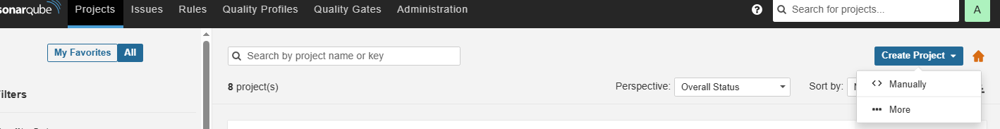
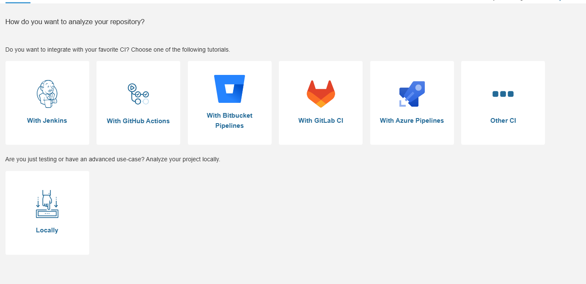
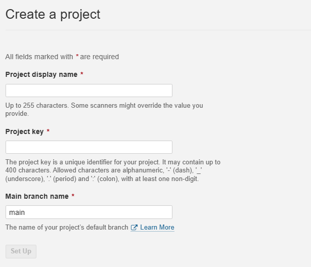
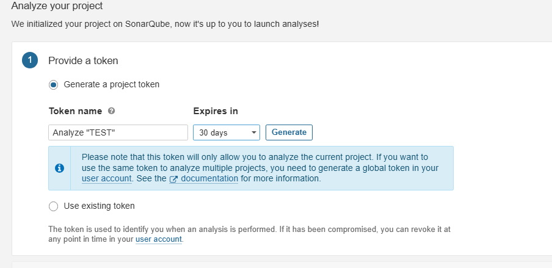
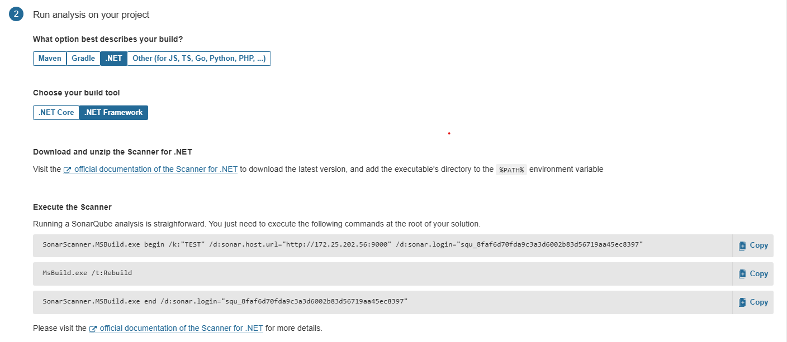
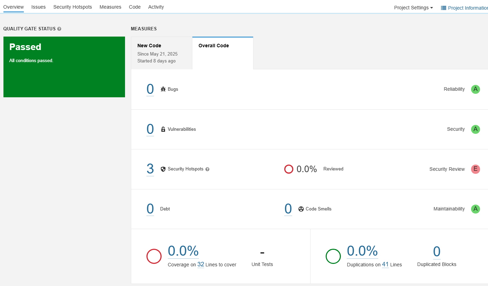

SonarQube
在近期研究 GitHub 與 GitLab 跑 CI/CD 流程時，瞭解到現在流程中開始會加入整合安全性檢查(SEC)，如 Python 使用 Bandit 等工具。這次會特別關注 SonarQube，是因為在尋找適合 C# 的靜態分析工具時，發現它不僅支援 .NET Framework 和 .NET Core，也具備強大的多語言分析能力。其實以前就聽過 SonarQube，但因為需要自行架設，一直沒有實際用過。這次趁著跑 CI/CD，決定學習部署並整合到開發流程。
SonarQube 是一套靜態程式碼分析工具，能在不執行程式的情況下分析原始碼品質與潛在問題。它可檢查命名風格是否一致、是否有未使用的變數、潛在的 NullReferenceException、硬編碼的密碼、重複邏輯、技術債指標，甚至提供資安建議如 SQL Injection 風險偵測等，對於提升程式碼可讀性與長期可維護性非常有幫助。
SonarQube 架構
SonarQube 主要由三個元件組成：
- SonarQube(Web UI、Elasticsearch)
- 資料庫(PostgreSQL)
- SonarScanner(開發者本地執行，負責將掃描結果送回 SonarQube Server)
使用 Docker 部署
我個人推薦使用 Docker Compose 部署，能大幅簡化安裝與設定流程。可參考官方文件 Installing SonarQube from the Docker image，以下為官方建議範例：
version: "3" |
若遇到
vm.max_map_count [65530] is too low, increase to at least [262144]，這是因為 SonarQube 依賴 Elasticsearch，需要較高的記憶體分頁數(vm.max_map_count)。請執行：
sysctl -w vm.max_map_count=262144 |
首次登入
部署完成後，瀏覽器開啟 http://localhost:9000
預設帳號密碼皆為 admin，首次登入會要求更改密碼。
建立專案
點選右上 Manually，這邊可以選自己的流程，也會有簡單的範例。如果是手動推送可以直接選 Manually，我自己會先在本地測試過後，才導入 CICD 流程中。


選 Manually 到下個畫面輸入 Project display name、Project key、Main branch name。
- Project display name：專案顯示名稱，方便辨識。
- Project key：專案唯一識別碼，後續推送分析時需填入此 key。
- Main branch name：主要分支。

建立專案 token，推送的時候會用到，可建立全新或使用過去建好的。

依照選擇的程式語言，頁面會顯示對應的推送指令範例參考。

推送分析的方法
本地使用 Docker 推送(適合非編譯型語言)
此方法適用於如 Python 不需編譯的語言，需編譯的語言，雖然也會推送成功，但但缺乏編譯過程產出的中介資訊，分析結果會較不完整。
補充說明：
由於 Windows Docker 預設無法直接存取公司內網服務，因此才需要用host.docker.internal讓容器能存取本機網路。我的 SonarQube 主機是部署在公司內網的其他機器，如果你的情境不是這樣，可以直接跳過這段說明，並直接連到對應的<sonarqube_host>。若是像我一樣，使用 SonarQube 在內網，需額外處理網路(我是使用 SSH 通道，或將本地 localhost 轉發到內網主機)。如果公司內部網路有嚴格限制，這類方式可能會失敗，總之需確保本地端能用 localhost 連到 SonarQube 網站。
若在 Linux，則可直接用--network=host參數，讓容器直接使用主機網路即可。
Windows 範例：
docker run --rm ` |
Linux 範例：
docker run --rm --network=host \ |
編譯型語言推送(如 .NET Framework/.NET Core)
以下範例皆以 Windows 環境為主。
.NET Framework 範例
- 初始化掃描 + 建立分析目錄
- 用 MSBuild 編譯，產生中介資料
- 上傳並分析結果到 SonarQube
SonarScanner.MSBuild.exe begin /k:"<your_project_key>" /d:sonar.host.url="http://<sonarqube_host>:9000" /d:sonar.login="<your_token>" |
.NET Core 範例
dotnet sonarscanner begin /k:"<your_project_key>" /d:sonar.host.url="http://<sonarqube_host>:9000" /d:sonar.login="<your_token>" |
補充
若遇到
ERROR: JAVA_HOME not found in your environment，請安裝 Java(如用 choco 安裝 openjdk)：這是因為 SonarScanner 需要 Java 環境才能執行，若系統未安裝 Java，會出現上述錯誤。
choco install openjdk |
非編譯型語言(如 Python、JS)
需根據作業環境安裝 SonarScanner，只需要簡單一行指令即可：
Windows 指令範例：
sonar-scanner.bat -D"sonar.projectKey=<your_project_key>" -D"sonar.sources=." -D"sonar.host.url=http://<sonarqube_host>:9000" -D"sonar.login=<your_token>" |
Linux 指令範例：
sonar-scanner -Dsonar.projectKey=<your_project_key> -Dsonar.sources=. -Dsonar.host.url=http://<sonarqube_host>:9000 -Dsonar.login=<your_token> |
Linux 安裝 sonar-scanner 步驟：
# 建立工具目錄 |
其它
額外資源
在 Administration 的 Marketplace 有許多額外的資源包可以下載，也可以尋找第三方社群製作的，手動加入到伺服器上。
下載第三方資源範例(介面更新為中文)
可參考 sonar-l10n-zh 專案，下載中文語言包：
wget https://github.com/xuhuisheng/sonar-l10n-zh/releases/download/sonar-l10n-zh-plugin-9.9/sonar-l10n-zh-plugin-9.9.jar |
查詢版本資訊
- UI 介面：Administration → System
- 直接瀏覽 http://sonarqube_host:9000/api/server/version
範例：
SonarQube ID information |
SonarCloud 雲端服務
SonarCloud 是 SonarQube 的雲端服務版本，由官方托管，適合不想自架伺服器的人使用。
簡易步驟大致如下：
- 前往 SonarCloud 註冊並建立 Token
- 授權 GitHub，匯入專案
- 視情況關閉 Automatic Analysis（否則與 CI/CD 分析流程可能衝突）
導入 GitLab CI 範例
我有將 .gitlab-ci.yml 範例放在 GitHub 上。CI 配置範例涵蓋 .NET 8 與 Python Flask 兩種語言，請直接參考各專案中的 CI 設定內容。由於我的 GitLab 與 SonarQube 都部署在公司內網，因此沒有使用 GitHub Actions。
結語
這是我使用 Python Flask 專案推送至 SonarQube 後的分析畫面：

以上是我部署 SonarQube 並整合至開發流程的經驗。SonarQube 在多語言支援與自動化整合上表現非常好，適合有需求的團隊導入。使用下來，發現它能偵測出多元且細緻的問題，特別是在命名、結構、重複邏輯、安全性、過時或不安全的加密演算法，以及 jQuery 舊版套件等方面都會給予提示，並會提供解決方案的建議。如果是長期累積的大型專案，初次掃描時可能會發現非常多問題，雖然數量龐大，但這正是需要面對與改善的開始😂😂😂。